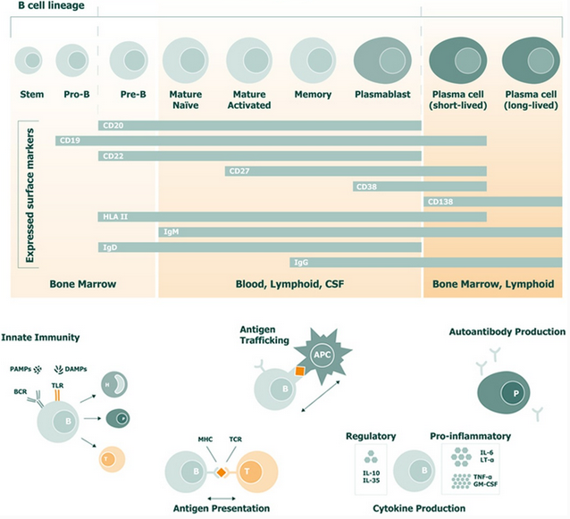

B-lymfocyten
B-lymfocyten, of B-cellen, zijn witte bloedcellen die verantwoordelijk zijn voor het aanmaken van antilichamen, waarmee ze lichaamsvreemde stoffen zoals virussen, bacteriën en zelfs kankercellen bestrijden. Samen met T-cellen maken ze deel uit van de lymfocyten. B-cellen reageren op antigenen (stoffen die het lichaam als vreemd herkent) door antilichamen te produceren die deze lichaamsvreemde stoffen neutraliseren (Cleveland Clinic, z.d.).
Er zijn twee soorten B-cellen:
- Plasmacellen: Deze cellen produceren antilichamen die het lichaam helpen bij het bestrijden van infecties.
- Geheugen B-cellen: Deze cellen zorgen ervoor dat het lichaam sneller kan reageren als het opnieuw wordt blootgesteld aan hetzelfde antigen. Dit vormt de basis van immuniteit tegen herhaalde infecties (Cleveland Clinic, z.d.).
Plasmacellen
Plasmacellen ontstaan uit B-cellen en produceren antilichamen. Er wordt gedacht dat B-cellen een rol spelen bij de pathogenese van MS, bij 90% van de patiënten is er namelijk immunoglobuline (Ig) aanwezig in het hersenvocht, wat wordt geproduceerd door plasmacellen. Antigen-geactiveerde B-cellen kunnen zorgen voor verdere vordering van MS, door zich te gedragen als antigeen-presenterende cellen (APC's). Vervolgens activeert de APC T-cellen (CD4+/T-helpercel en CD8+/cytotoxische T-cel) (Arneth, 2019).
Link met multiple sclerose (MS)
Volgens Comi et al. (2021) spelen B-cellen een rol bij de pathogenese van MS door:
- De B-cel gedraagt zich als antigeen-presenterende cel (APC) en presenteert antigenen aan T-cellen wat leidt tot een toegenomen autoproliferatie van T-cellen die verantwoordelijk zijn voor het aanvallen van hersencellen.
- De productie van pro-inflammatoire cytokinen en chemokines die ontstekingen bevorderen.
- De productie van oplosbare toxische stoffen die bijdragen aan schade aan oligodendrocyten en neuronale schade.
- Het dienen als reservoir voor Epstein-Barr virus (EBV), wat verband houdt met de ontwikkeling van MS.
- Het ontwikkelen tot plasmacel, deze maakt antilichamen aan tegen lichaamseigen cellen
Hieronder is een overzicht te zien van de verschillende stadia van een B-cel en waar de verschillende stadia voorkomen in het lichaam. Ook is er een visualisatie te zien van de verschillende rollen van B-cellen.

Visualisatie van stadia, functie en locatie van B-cellen (Comi et al. 2021).
Bronnen
- Arneth, B. M. (2019). Impact of B cells to the pathophysiology of multiple sclerosis. Journal Of Neuroinflammation, 16(1). https://doi.org/10.1186/s12974-019-1517-1
- Cleveland Clinic. (z.d.). B cells. https://my.clevelandclinic.org/health/body/24669-b-cells
- Comi, G., Bar-Or, A., Lassmann, H., Uccelli, A., Hartung, H. P., Montalban, X., Sørensen, P. S., Hohlfeld, R., Hauser, S. L., & Expert Panel of the 27th Annual Meeting of the European Charcot Foundation (2021). Role of B Cells in Multiple Sclerosis and Related Disorders. Annals of neurology, 89(1), 13–23. https://doi.org/10.1002/ana.25927